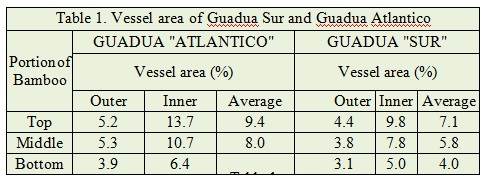
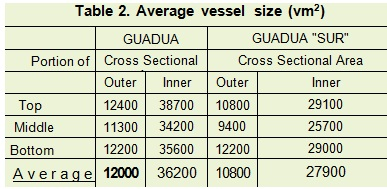

The Costa Rican National Bamboo Project (NBP) was created to offer low-cost houses to help in the solution of the housing deficit. Initially, in 1988 the NBP worked under the administration of the United Nations Center for Human Settlements (Habitat) and the United Nations Development Program (UNDP), (Projects COS 87/001 and COS 90/005), with financing from the Royal Government of the Netherlands (Chaves y Gutierrez, 1990). As of January 1996, all professional, technical and material resources of these projects were transferred to the Bamboo Foundation (FUNBAMBU), a nonprofit non-government organization presided over by the Minister of Housing and Human Settlements (MIVAH) and dedicated fundamentally to the construction of housing for low-income people. This Foundation has the function of perpetuating in a self-sustaining manner the gains and benefits of the National Bamboo Project (Gutierrez, 1998).
Since then, nearly 3000 houses have been built and more than 300 ha of bamboo been planted. The government plans to extend the plantations up to 2000 ha in the near future.
The need of bamboo preservation. When the project started, insect attack of the bamboo in use was a very serious problem Today, the durability of bamboo is no longer in question, since it was possible to find effective, low-cost preservatives and to develop simple and efficacious systems for its treatment. In recent years, the demand for bamboo culms for the construction of houses has considerably increased. Besides it has become necessary to treat several thousand of culms and laths, for furniture making, handicraft, construction parts, for the local market as well as for exports.
Bamboo culms provide an excellent structural material for many purposes. Its use, however, is restricted because of their low resistance against degradation by fungi and insects. Whereas fungal decay can be prevented by architectonic and constructive details that keep the bamboo dry, insect attack can be avoided efficiently only by a suitable chemical preservation. The possible treatment techniques for bamboo have recently been summarized in numerous papers, for example: Liese (1980, 1997), Sulthoni (1987), Kumar et al. (1994).
A wider application of the bamboo preservation is. however, rare. This is mainly duetothefact that bamboo is a low-cost material, which would become more expensive and less accessible to the poor after proper preservation, although it may be more economical at the end. In addition, bamboo culms show a refractory behavior towards penetration compared to timber. which difficulties simpler preservation methods like immersion. A continuous market demand of durable material is required to merit the necessary treatment installations and to develop the technical skills.
Bamboo Preservation Research in Costa Rica
Resulting from consultations by the first author during the years 1988 to1992 (Liese, 1988, 1989, 1990a 1990b, 1992) and with the assistance of research done at the University of Costa Rica and the Technological Institute of Costa Rica, the methods and preservatives available in the country were analyzed. At the same time, the technical personnel of the BNP with the help of researchers and laboratory facilities at the mentioned universities conducted tests to be adapted to the treatment of bamboo in the rural areas of the country. It was necessary to treat bamboo culms as well as "esterilla" (culms spliced open with an ax into a flattened kind of board) for the construction of houses as well as the production of furniture, handicraft, and decorative elements for buildings. Later on, it became necessary to treat, besides "esterilla", also "reglilla" (small boards or laths obtained by longitudinally sawing the bamboo culms). First trials for the application of boron preservatives were done either by soaking or by sap-displacement for round bamboo pieces and dip-diffusion was tested for the treatment of "esterilla" (spliced bamboo) and "reglilla" (laths).
Selection of the treatment methods. After those preliminary trials it was decided to concentrate research on the treatment of culms to be used as structural members by the sap-displacement process. This method appeared effective, environment-friendly, and particularly suitable for the treatment of bamboo for houses in the rural areas of Costa Rica. For the treatment of Guadua culms, the sap-displacement method compared with other methods, such as long period immersion, gives the best results regarding penetration, distribution, and retention of the preservative and is less time consuming in the operation process.
For preservative treatment of "esterilla" and "reglilla" a dip-immersion/diffusion process was tested in the laboratory as well as in the field. Taking into consideration the great potential of contamination and misuse of the preservatives obtained from the first trials, it was recommended to apply the dip-diffusion method only at a few centralized places as close as possible to the plantations, and to have the work done only by skilled labor under proper supervision. Nowadays, as it will be, xplained later on, a preservative treatment for laths has been developed as an improved, effective, and safe way to treat the material.
The sap-replacement treatment also called Boucherie process after its French inventor A. Boucherie in 1839 (Willeitner and Liese, 1992) has been applied since long for the treatment of wooden poles. Its use for bamboo was first tried in India by Narayanamurti et al. (1947) and was further developed to the "modified Boucherie treatment" by Purushotham et al. (1954) and Liese (1955).
Although encouraging results were obtained from these experiments, its practical use remained rather limited, because several parameters needed further clarification for its use on a semi-commercial scale. Based on the literature about bamboo preservation and practical experiences in several Asian countries, the research at PNB was directed to the testing of several parameters, which had to be defined previously to a commercial operation at a larger scale. It was especially necessary to answer the following
- What kind of preservative to use?
- What will be the response of Guadua bamboo to sap-displacement treatment?
- What are the parameters necessary to obtain a good penetration?
- What kind of equipment will be necessary to treat Guadua culms?
- What kind of protection will be obtained for the treated material?
- What are the costs and times for the preservation of the culms and laths by this process?
Selecting the preservative. Since the final price of the treated bamboo culms for the construction of low-cost houses has to be maintained as low as possible, the costs for bamboo preservation must also be low. At the same time, the treatment should be reliable to insure the expected duration and performance of the material. From the first tests done it seemed to be a very difficult task.
About a dozen products nationally available in the market, which manufacturers claimed to be "good" for the preservation of timber, were tested. However, most of these products had to be rejected when the following criteria of selection were adopted:
- A competent and responsible manufacturer or distributor of the product.
- A reasonable priced product.
- Good preservation properties, especially against Dinoderus spp. and other insects.
- Good distribution of the preservative within the culm by diffusion.
- Low toxicity to human beings and low environmental risks.
After many facts were considered, a preservative with boron as an active component was selected. This type of preservative has generally good preservation properties, good diffusion rates, low environmental effects towards human beings and animals and is quite economic in price. The main disadvantage being that it does not posses chemical fixing properties and in consequence, the treated material can be leached out if it is not well protected against humidity.
The preservative TIMBOR showed most of requirements needed. However, since TIMBOR not imported into the country, preliminary trials vive done using the product "Menorel-8" (SOLUBOR). This product is manufactured as a foliage fertilizer and e widely distributed in Costa Rica. It consists mainly of Disodium Octoborate Tetrahydrate (Na2B8O134H2O) with an active boron content of 66.1 %, expresses as B203.
Anatomical Considerations for the Sap-Displacement TreatmentImpregnating stage. As it has been mentioned, since a bamboo culm is resistant to lateral penetration by its hard skin, the appropriate idea of the Boucherie treatment for an axial liquid exchange was taken up. Along the culm length, both at the inner and outer part, the vessels run straight without any branching or obstructing connections of single vessel members (Fig. 1). Nodes, however, interrupt the easy fluid transport. Observations of the nodal structure have revealed that many vessels turn lateral changing their size into shorter cells with many perforations for an intensive interconnection with other vessel members. Thus, the diaphragm, as the inner part of the nodal area, provides a distribution of liquid and sap in the vessels and sieve tubes of the phloem to all sides of the culm (Ding and Liese, 1995). Obstacles between these cells reduce an easy flow. Apart from the twisl and realignment in the nodal part, some vessels do not turn in but run straight through into the following vessel, as shown in Fig. 2.
The long stretching vessels are thus perfect pathways for the exchange of sap by the preservation solution However, a main obstacle has to be considered k- :-
successful treatment: the vessels occupy only a small area of the whole cross section to be proteciec. Whereas for an axial penetration of softwoods. the lumina of tracheids provide 60-70 % cross-sectiona area, and the vessels in diffuse porous hardwoocts amount to 20-30 %, bamboo has only about 5-8 41- vessel area (Liese, 1994).
Total vessel area available for liquid flow.
In order to get more information about the vessel area available, some detailed investigations were made kw Guadua "Sur" and Guadua "Atlantico", the two main Guaduas that have been planted in Costa Rica. Internodal parts were cut from the bottom, middle, and top portion of the culm. Samples were taken from each disk from two opposite sides, divided into their outer and inner half. The measurements were made with an Image Analyzer (CUE-3, Olympus) at 40 times magnification. After a delicate preparation, the metaxylem vessels could be clearly differentiated from the fibers and parenchyma. The results are summarized in table 1.

The figures about the vessel area demonstrate considerable differences, since the vessel area at the inner half is about double than that of the outer half. Moreover, the vessel size increases considerably from the bottom to the top, both at the inner and outer half.
The average vessel area for the two Guaduas reveals different mean values, since Guadua "Sur" showed distinctly lower values. As both Guaduas differed considerably in their flow behavior in the preliminary testing, the average vessel size of the two Guaduas was further analyzed as shown in table 2. The results of such measurements demonstrate that Guadua "Sur" has considerably smaller vessels, which could account for the lower vessel area and the longer treatment time experienced.

Independent of the respective vessel area, the bamboo culms must be treated as fresh as possible, because soon after their felling the vessels are filled by a blockage due to cellular outgrowths (tyloses) and slime (Fig. 3). Therefore, both ends have to be cut off immediately before the treatment for a clean surface.
Diffusion phase. For an effective treatment of the bamboo culm by the sap-replacement process it is important to realize that even a complete filling of all the vessels covers less then 10 % of the whole tissue to be treated and that the remaining large portion stays liable for degradation. Consequently, the sap replacement phase has to be followed by a second treatment phase, namely the diffusion of the preservative from the vessels into the surrounding fiber sheaths and bundles as well as the parenchyma. In order to provide the maximum reservoir for such diffusion, nearly all vessels have to be completely filled with a sufficient high concentration. This will happen first to the larger vessels at the inner part of the culm and only later to the smaller vessels at the outer zone. Thus, the time necessary for the treatment will be governed by the time necessary for a complete exchange of the sap by the preservative solution
Bamboo Preservation at Funbambu
For the commercial production of treated bamboos using the sap-displacement method, several technical matters had to be settled or improved, which required a very tedious trial and error process, among them:
- Some variables of the process are sensitive to the bamboo species being treated and therefore must be adjusted accordingly.
- Harvesting and transport should be well-coordinated in order to keep the culms as fresh as possible, otherwise water storage facilities are necessary.
- Design, construction and operation of the treatment caps at the butt end are critical. They must be flexible and durable to accommodate repetitive deformations and displacements without brittle fracture of parts and spilling of liquid. Good connecting devices between culm and cap are essential.
- The caps must include a special device to allow for the complete air removal from the system.
- An adequate pressure should be maintained at all times of the treatment process.
- Clean water must be used for the preservative solution and it must be kept clean in order to avoid suspended particles that will produce obstruction of the flow through the vessels of the bamboo culm.
- Permanent and strict quality control of the process as well as of the treated bamboo products is mandatory,
The sap-displacement preservation plant has been described before (Gonzalez and Gutierrez, 1996). Since then up to now, this process as well as the dip-diffusion method have been improved according to the description below.
Commercial sap-displacement pressure treatment plants. In the treatment plants being commercially used at FUNBAMBU, the rubber caps embracing the culm ends have been improved to simplify and speed the process. They allow a fast fixing of the culm to the cap with a tight joint that prevents leakage. It is possible to have twelve bamboo culms ready for treatment in only 8 minutes. On the other hand, the problem of the air remaining in the upper part of the cap during the preservation process and thus preventing the flow of the liquid in this part of the culm, was eliminated by a bleed valve (Gonzalez and Gutierrez, 1996).
Even though clean water is employed for the preservative solution, the liquid flow was decreasing with time. It was found that particles of soil and dust, picked up by the preservative solution during the process, were plugging the extreme end of the culm were the liquid was entering. To overcome this problem, two kinds of filters were installed. First, a coarse one made out of cheese cloth, to filter the mixture of solution and sap coming from the top end of the culm as well as from the reservoir, collecting the liquid from the bleed valves. The second is a fine in-line filter with a paper-filtering element, which is installed just before the entrance of the preservative solution to the manifold where the culms are connected.
The pressure system was improved for a larger capacity with an eighty-liter pneumatic tank. With this tank more culms can be treated at once. At present, up to 100 culms can be treated simultaneously. With the tank larger capacity, the pressure can also be kept constant for longer periods. The pressure plant was further improved by placing corrugated galvanized iron roof sheets underneath the culms being treated, in order to collect the liquid spilling from the nodes. In this way, almost 100% of the preservative can be collected and recycled (Fig.4).
The dip-diffusion treatment plant. The dip-diffusion treatment plant was built to treat "esterilla" and "reglilla". It consists of a tank made of four used steel oil barrels, which have been cut into halves and welded to produce a tank of approximately 300-liter capacity (Fig. 5). A steel frame that allows for a proper height to facilitate the immersion of bamboo laths supports this tank. After a brief period of immersion, the laths are placed over corrugated iron roof sheets and left for a brief time to collect the excess liquid and return it into the tank. The laths are removed, wrapped with a plastic film and stacked for the preservative to diffuse into the material. Finally, the plastic is taken off and the material is placed in a well-ventilated covered place for drying. Since plastic sheets are expensive and do not last long, a permanent covered place has been projected that can be closed for the diffusion stage and opened later for drying.
QUALITY CONTROL
In order to be sure that the material is well treated, it becomes essential to strictly follow the different steps of the treatment process. First, the preservative solution has to be prepared. For this purpose, the required amount of preservative is weighted and the water is measured by volume and mixed in the working tank, according to the required concentration. After complete solution, when the liquid is clear, a sample of the liquid is taken into a cylinder where, with the help of a hydrometer and a thermometer, the specific gravity and the temperature of the solution are taken.
With the help of Figure 6, the concentration of the solution is read directly. For example: 1.068 specific gravity at 25° C gives 12 % Boron-salt concentration. The concentration is checked regularly and adjusted as needed by the addition of more preservative or more water until the required concentration is again reached. Afterwards, the culms are connected at their bottom to the rubber caps and the system is filled with the liquid preservative, bleeding each cap to ensure that all air is expelled out from the system. Next, each one of the inlet pressure liquid valves is opened and the treatment process starts. The sap will start dripping at the other end of the culms almost immediately. The complete replacement of the sap by the preservative may take from minutes to hours depending on the length and wall thickness of the culms and the amount of time elapsed since it was cut. For the usual pieces, 3 to 4 meters long, the average time is below 20 minutes. To check that the culms have reached the final point of treatment, a simple test with a pH sensitive paper is carried out. A change of color is observed because there is a relation between boron concentration and the pH of the liquid coming out of the culm.
After the culms have been treated they are stored and allowed to dry in a covered place to avoid direct exposure to excessive moisture from rain and heat and ultraviolet rays from the sun. The first effect may produce leaching of the preservative and subsequently fungi infestation and insect attack and the second, splitting and structural collapse of the cross section.
Drying in a very humid tropical climate takes a lot of time. It is therefore recommended to allow for enough space between the bamboo pieces and an adequate distance from the wet soil -not less than 40 cm- for good ventilation.
When the preservative has reached complete diffusion and the material is dry, a thin cross sectional sample of several representative culms is cut near the extreme where the liquid emerged. This sample is further dried for three to five hours in a kiln, heated to a temperature of no more than 60° C. The sample is covered throughout with fine drops of a curcumin solution (Solution 1) and, 15 to 30 minutes later, with an acid solution (Solution 2). In ten minutes time a bright red color should develop, indicating that the culm has being well treated and contains a sufficient amount of boron. A yellow color indicates insufficient amounts of boron.
FINAL REMARKS
The sap-replacement treatment of bamboo culms, as developed by the Costa Rican National Bamboo Project, is a well proven technology that has already being transferred to, among others, the Environmental Bamboo Foundation, Bali, Indonesia, since 1994 and to the "Bamboo World" Establishment of Victor Cusack, Australia (Cusack, 1997). The FUNBAMBU technical staff is willing to provide the complete technology transfer procedure upon request.
Contributed by:
W. Liese (1), J. Gutierrez (2,3) and G. Gonzalez (2) (1) Ordinariat fur Holzbiologie, Universitat Hamburg, Germany (2) Bamboo Foundation, (FUNBAMBU), Costa Rica (3) LANAMME, University of Costa Rica.
- Log in to post comments
- Email this page